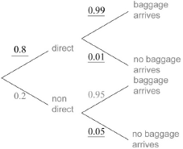

* This question is from an exam for a previous syllabus, and may contain minor differences in marking or structure.
 (A1)(A1)(A1) (C3)
Note: Award (A1) for each correct pair of probabilities.
[3 marks]
(A1)(ft)(M1)
Note: Award (A1)(ft) for two correct products of probabilities taken from their diagram, (M1) for the addition of their products.
(A1)(ft) (C3)
Note: Follow through from part (a).
[3 marks]